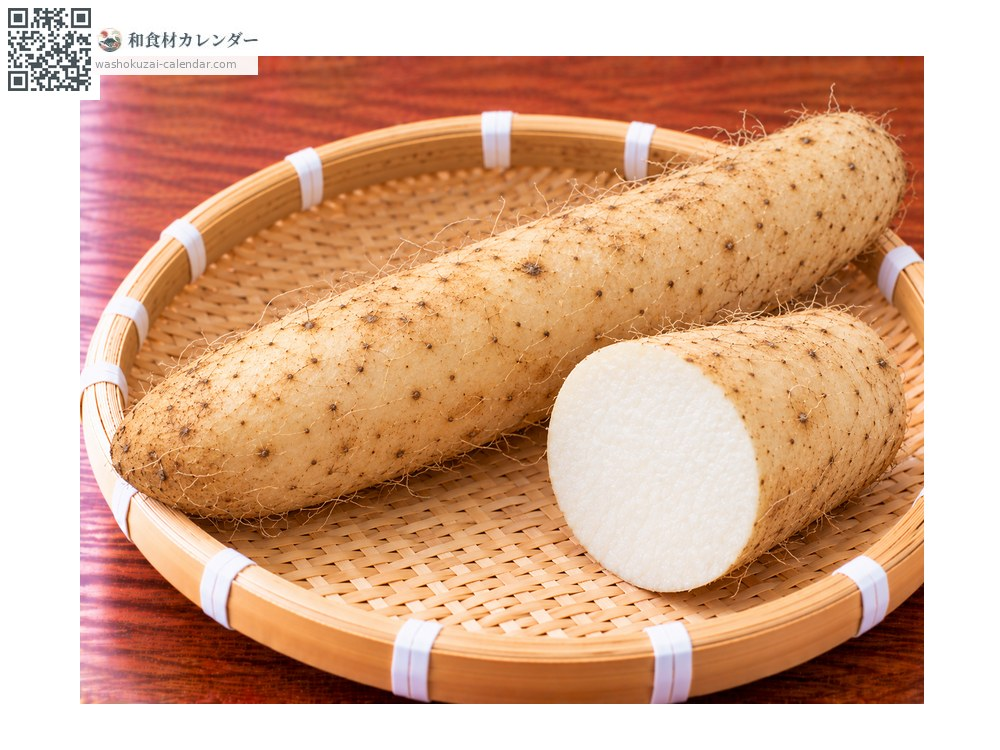
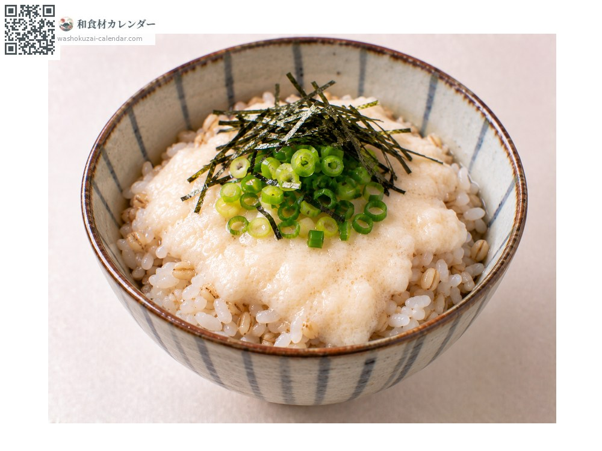
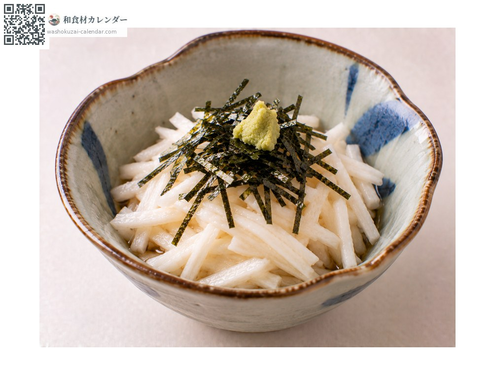
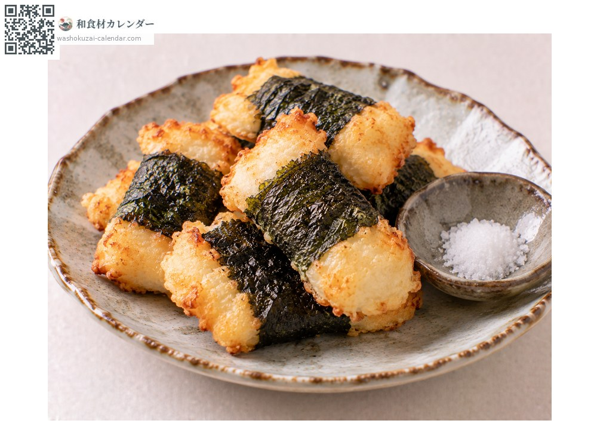
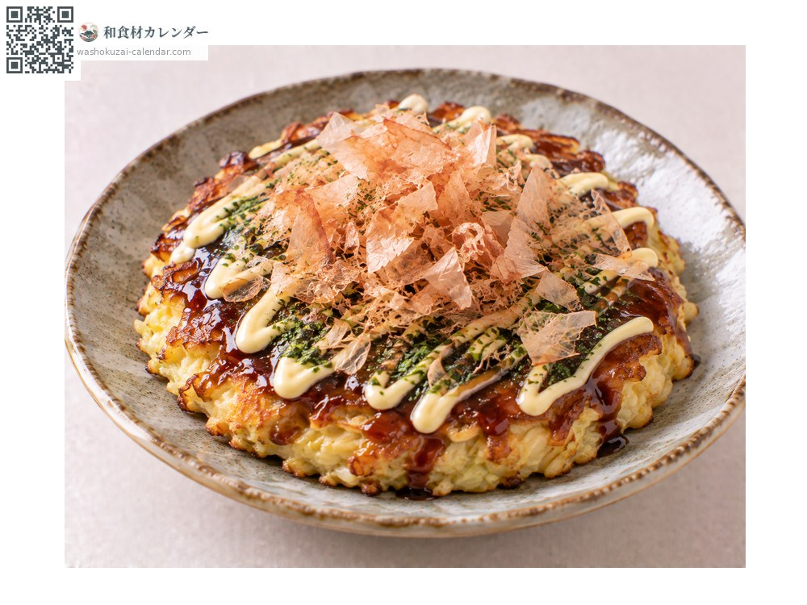

ผัก
มันภูเขาญี่ปุ่น
山芋 やまいも yamaimo
ชื่ออื่นyamaimo
อร่อยที่สุดในเดือน ม.ค., ก.พ., ต.ค., พ.ย., ธ.ค.

ช่วงที่อร่อยที่สุด
ม.ค.
ก.พ.
มี.ค.
เม.ย.
พ.ค.
มิ.ย.
ก.ค.
ส.ค.
ก.ย.
ต.ค.
พ.ย.
ธ.ค.
ช่วงอร่อยที่สุดมีจำหน่าย
วิธีปรุง

โทโรโระ
ขูดแล้วละลายด้วยน้ำดาชิ ราดบนข้าวบาร์เลย์หรือโซบะ

หั่นเส้น
หั่นเส้นเล็กกินสด สัมผัสกรอบ

อิโซเบะอาเกะ
ขูดแล้วห่อสาหร่ายทอด ได้เนื้อฟูเบา

โอโคโนมิยากิ
ผสมลงในแป้ง ทำให้เนื้อฟูนุ่ม
วิธีเลือก
ความหนาสม่ำเสมอ รากฝอยน้อย รอยตัดยังขาวไม่เปลี่ยนสี
วิธีเก็บรักษา
ทั้งหัวห่อกระดาษหนังสือพิมพ์เก็บที่มืดเย็น ที่ตัดแล้วปิดรอยตัดด้วยฟิล์มแช่เย็น
แหล่งผลิตหลัก
เกร็ดน่ารู้
นางะอิโมะมีน้ำมากและเหลวกว่า เหมาะกินสด ยามาโตะอิโมะเหนียวกว่ามาก ขูดแล้วยกด้วยตะเกียบได้ จิเน็นโจซึ่งเป็นของธรรมชาติเหนียวที่สุดและราคาแพง เลือกตามความเหนียวที่เมนูต้องการ
วัตถุดิบที่อร่อยที่สุดในช่วงเดียวกัน
 ดอกตูมฟุกิ
ดอกตูมฟุกิ ดอกผักกาดก้านอ่อน
ดอกผักกาดก้านอ่อน เซริ (ผักชีล้อมญี่ปุ่น)
เซริ (ผักชีล้อมญี่ปุ่น) กะหล่ำปลี
กะหล่ำปลี ผักกาดขาว
ผักกาดขาว กะหล่ำดาว
กะหล่ำดาว บรอกโคลี
บรอกโคลี ดอกกะหล่ำ
ดอกกะหล่ำ